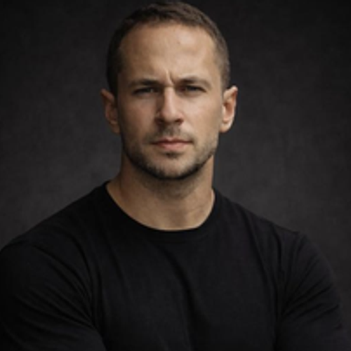
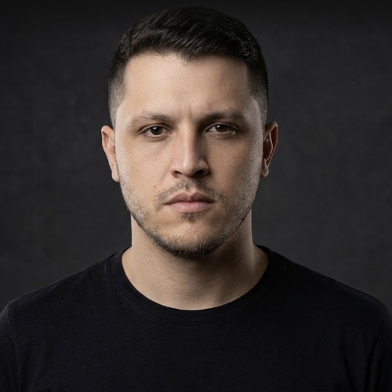
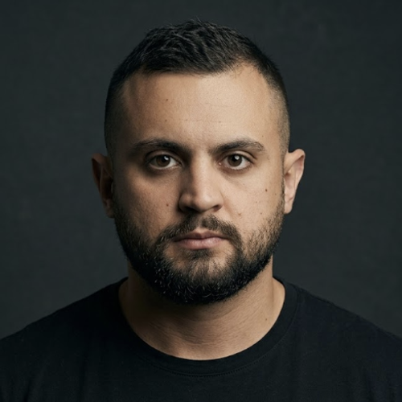
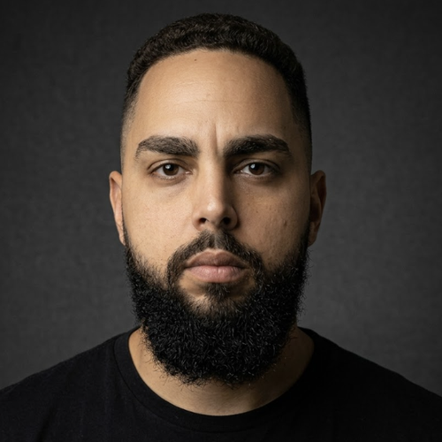
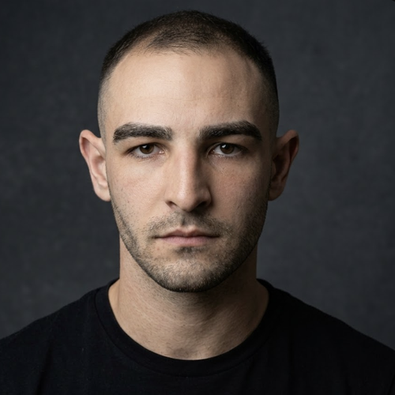
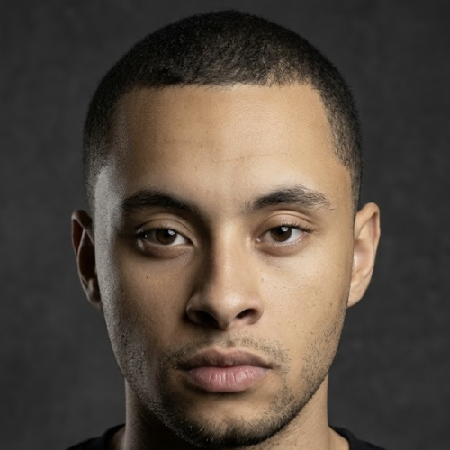
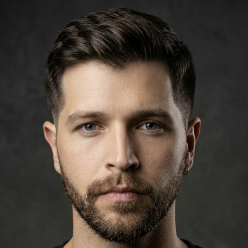
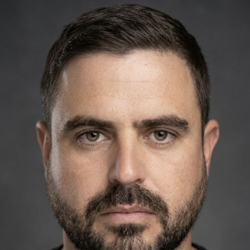
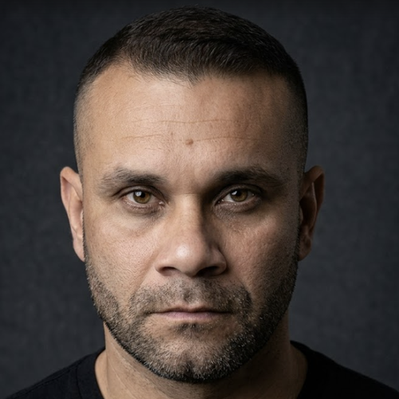

VITOR
Ger. Segurança Patrimonial e Investigação

ELIAS DOS SANTOS
Coordenador de Investigação

GABRIEL ZANELATO
Especialista de Investigação

VICTOR
Analista de Investigação

RAFAEL
Analista de Investigação

LEANDRO
Assistente Administrativo

DOUGLAS NORKEVICIUS
Secondment Jurídico

BRUNO DELGADO
Especialista de Operações

ALEX
Supervisor de Operações